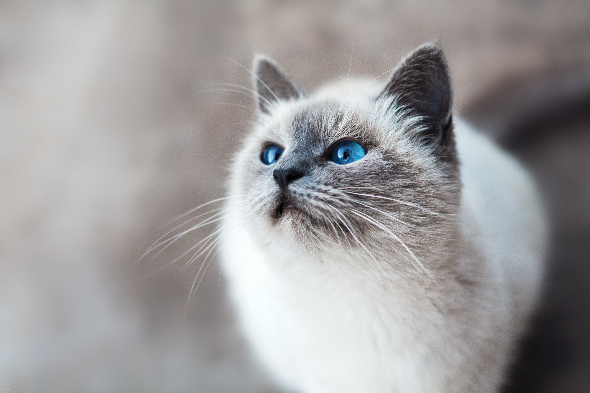
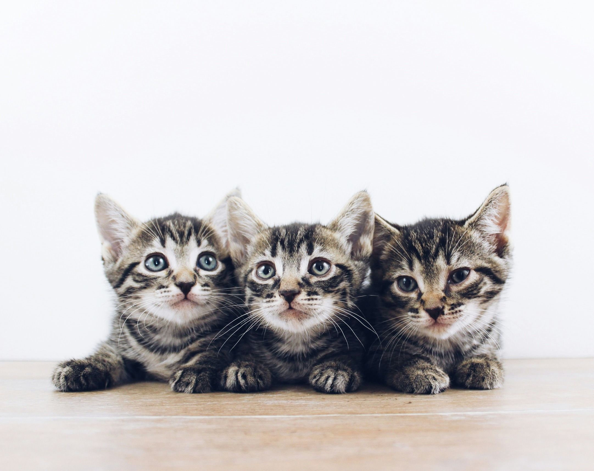
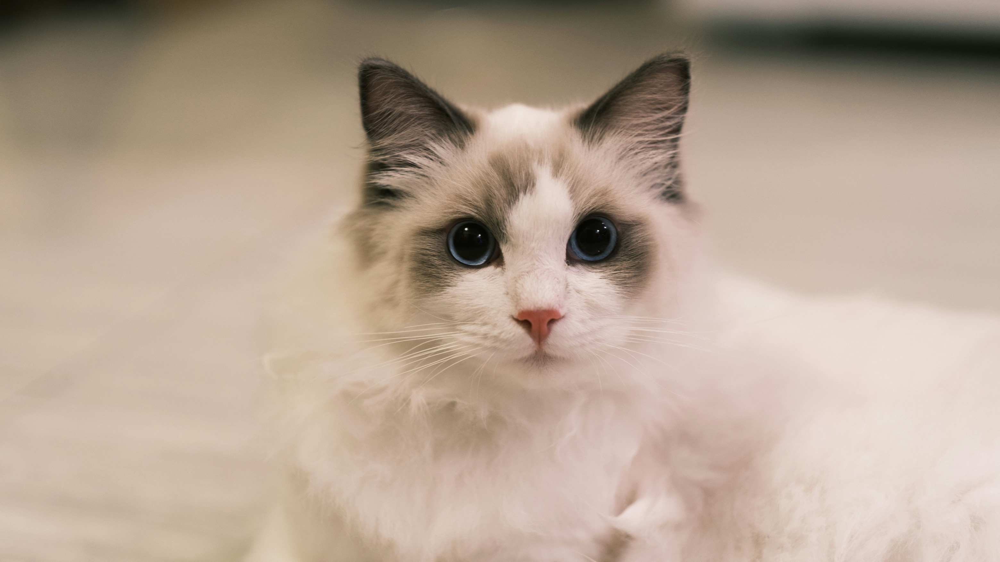
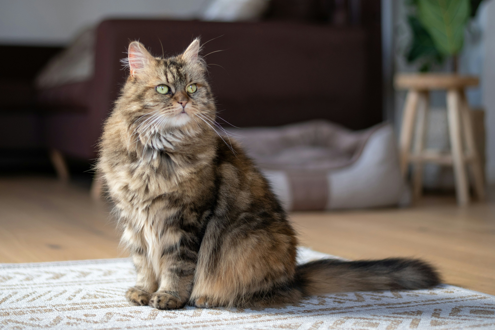
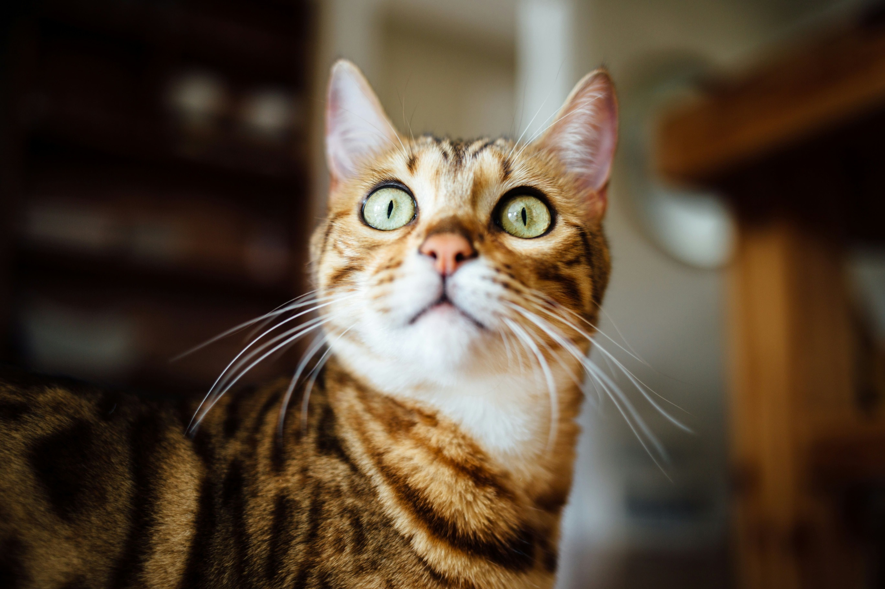
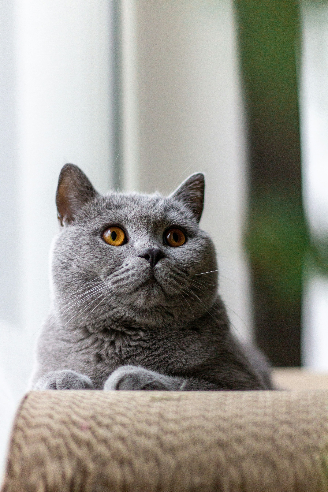
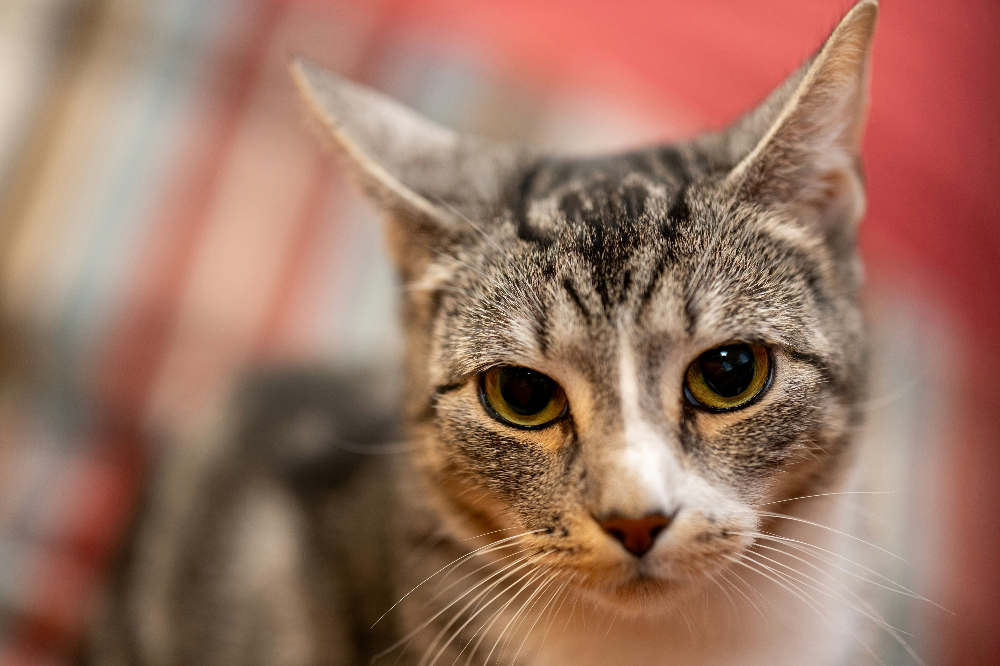

Siamese
Friendly, vocal, and extremely social. Siamese cats love interacting with people and are often described as "talkative."
A beginner's guide to happy, healthy cats.

Although every cat is unique, many breeds share similar personalities and appearances. Below are several friendly introductions to some of the world's most popular cat breeds!

Friendly, vocal, and extremely social. Siamese cats love interacting with people and are often described as "talkative."

Calm and affectionate cats known for their soft coats and relaxed personalities.

One of the largest domestic cat breeds. Gentle, intelligent, and playful.

Athletic, energetic, and adventurous with beautiful spotted coats.

Quiet, independent, and easygoing. A wonderful companion for relaxed households.

The most common companion cat. They come in many colors and personalities.
| Breed | Energy | Affection | Grooming |
|---|---|---|---|
| Siamese | High | Very High | Low |
| Ragdoll | Low | Very High | Medium |
| Maine Coon | Medium | High | High |
| Bengal | Very High | Medium | Low |
| British Shorthair | Low | Medium | Low |
Breed descriptions are only general guidelines. Every cat has its own personality, and spending time with a cat before adopting is the best way to find the right companion for your lifestyle. Referenced from Ten Popular Cat Breeds and Their Personalities from Animal Care Center of Castle Personalities and Compare Cat Breeds from Cats.com, visit to see and compare other cat friends!